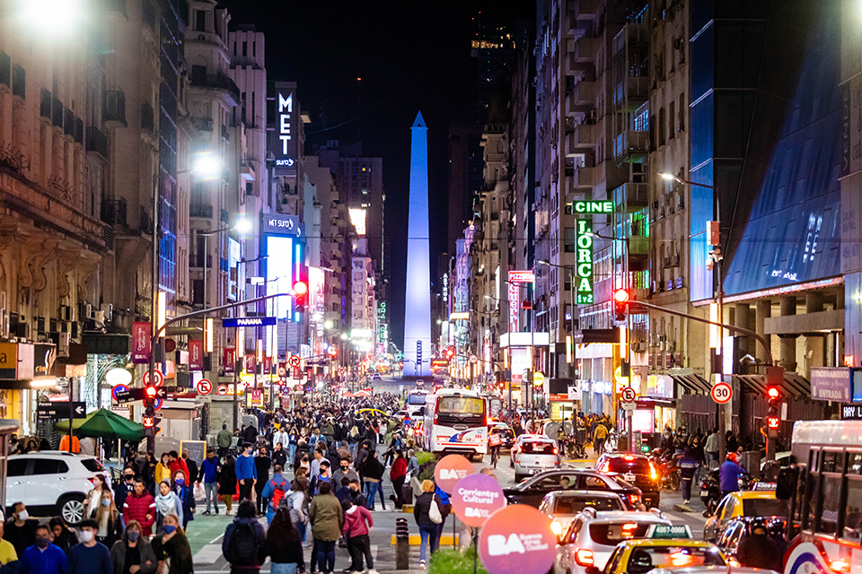

"PROVINCIA DE LA ETERNA VIGILIA"
Capital de Argentina, es solo el comienzo de una experiencia extraordinaria en la provincia homónima. A medida que te aventures más allá de la ciudad, descubrirás un mundo diverso y fascinante.
Acá te presentamos algunos de los atractivos más destacados de la Provincia de Buenos Aires:
Costa Atlántica: La costa atlántica de la provincia ofrece kilómetros de playas vírgenes, balnearios de renombre y actividades acuáticas emocionantes.
Sierras de la Ventana: Este impresionante sistema montañoso es ideal para los amantes de la naturaleza y el senderismo. Ofrece espectaculares vistas panorámicas, cuevas, ríos y cascadas. El Cerro Ventana es uno de los puntos culminantes, con su icca Formación rocosa en forma de ventana.
Delta del Paraná: El delta del río Paraná es un laberinto de islas y canales, un ecosistema único en el mundo. Puedes explorarlo en kayak o en una tradicional lancha a remo. El pueblo de Tigre, en el delta, es un lugar encantador para visitar.
Ciudades Históricas: La provincia de Buenos Aires alberga muchas ciudades históricas encantadoras. San Antonio de Areco, por ejemplo, es conocida por su preservación de la cultura gaucha argentina y alberga eventos anuales importantes, como la Fiesta de la Tradición.
Ruta del Tango: El tango es una parte intrínseca de la cultura argentina, y la provincia de Buenos Aires es el lugar de nacimiento de este apasionado baile. Buenos Aires, la capital de la provincia, es famosa por sus milongas y escuelas de tango
Turismo Rural: Las estancias (haciendas) ofrecen la oportunidad de experimentar la vida en el campo argentino. Puedes participar en actividades rurales, disfrutar de asados tradicionales y aprender sobre la cría de ganado.
Gastronomía: La provincia de Buenos Aires ofrece una amplia variedad de platos deliciosos. No te pierdas la oportunidad de probar el asado argentino, las empanadas y los postres tradicionales como el dulce de leche.Realizar una degustación de vinos en una bodega local es una experiencia imprescindible.
Reservas Naturales: Numerosas reservas naturales y parques nacionales protegen la diversa flora y fauna de la provincia. Puedes realizar caminatas, avistamiento de aves y observación de la vida silvestre.
Turismo Deportivo: Si eres un amante del deporte, la provincia alberga eventos deportivos emocionantes, como carreras de automóviles en el Autódromo de Buenos Aires y competencias de polo en lugares exclusivos. Además de contar con las canchas de los clubs más reconocidos del fútbol argentino.
Barrios Pintorescos: Buenos Aires está dividida en numerosos barrios, cada uno con su propio carácter y encanto. San Telmo es famoso por sus calles empedradas y ferias de antigüedades, mientras que Palermo es conocido por su vida nocturna y diseño de vanguardia.
Vida Nocturna: La vida nocturna de Buenos Aires es legendaria. Los boliches (discotecas) y bares están abiertos hasta altas horas de la madrugada, y la ciudad es famosa por su música y baile de tango.
Parques y Espacios Verdes: Los habitantes de Buenos Aires disfrutan de una amplia variedad de áreas verdes
Arte en la Calle: Buenos Aires es un semillero de talento artístico callejero. Descubre esculturas sorprendentes, instalaciones de arte y grafitis creativos en cada esquina.
¡Y muchas cosas mas!
La Provincia de Buenos Aires ofrece una mezcla única de naturaleza, cultura, historia y aventura. Cualquiera que sea tu interés, encontrarás algo fascinante en esta vasta y diversa región de Argentina.
¡Vení y conocela!